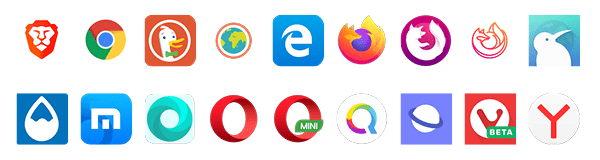
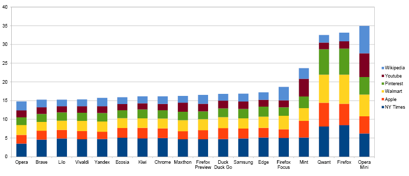
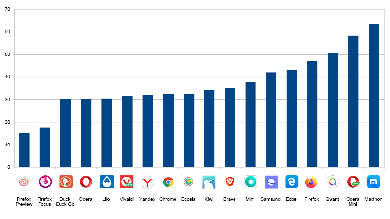
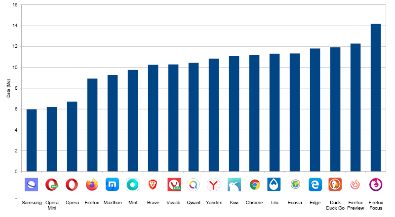
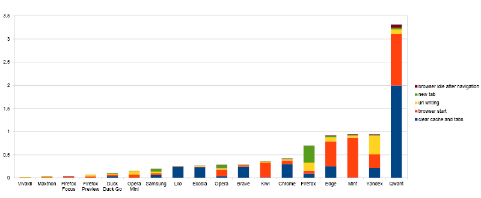
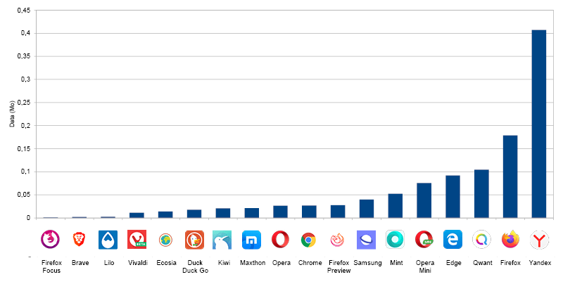
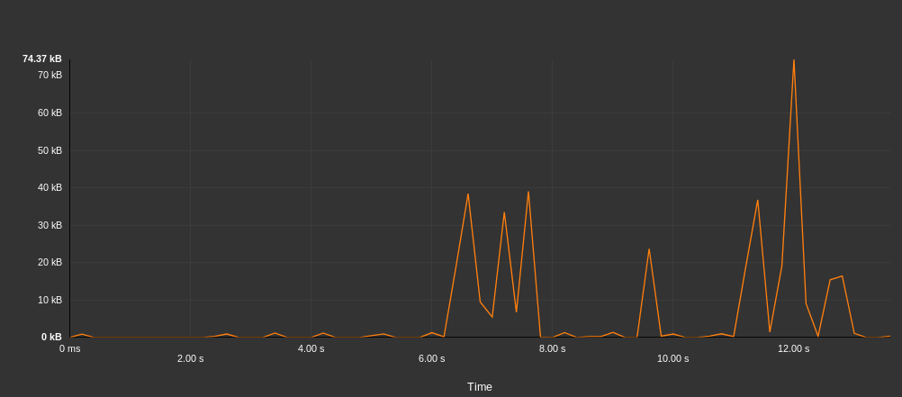
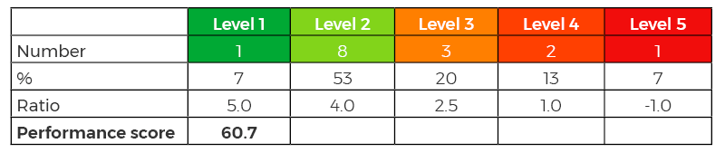

The 2021 edition of this ranking is available! Read the study
The web browser is a main tool on a mobile device. Not only for websites but also for new applications based on web technologies (progressive web app, games, …).
In our 30 most popular mobile apps ranking, among the mails, direct messaging, social networks, browsers categories, web browsing and social networks are on average more consuming than games or multimedia applications. The ratio would be 1 to 4 between the least and most energy consuming applications.
Decreasing the environmental impact of the digital life and increasing the autonomy of phones go in part through the choice of a good browser. Just as if you want to reduce the impact of your mode of transport, it is important to take the most efficient vehicle.
Last year we published the 2018 ranking of the least energy-consuming browsers, we made a new edition for 2020, more complete, made with our GREENSPECTOR App Mark.

Overall Ranking

The average rating is 36/100 which is pretty mediocre. It can be explained by low notes for each of the metrics.
The three least energy-consuming browsers are: Vivaldi, Firefox Preview, Duck Duck Go.
Overall energy consumption (in mAh)

The median is 47 mAh and a large part of the browsers are in this consumption level (8/18 are in the 2nd quartile).
Note that the last 3 browsers in the ranking are recognized by a consumption 75% higher than the median. Firefox, Qwant and Opera Mini are indeed very energy intensive.
Energy consumption of navigation (in mAh)

The last 3 browsers of the global ranking (Opera Mini, Firefox and Qwant) as well as Mint consume much more than the average (between 20 and 35 mAh against 16 mAh).
It is sufficient to say that for most browsers (apart from the previous exceptions), pure navigation is not going to be the reason for the difference in overall consumption. This is mainly due to the use of visualization engines. Most browsers use the Chromium engine. For Opera Mini, the specificity is that a proxy is used and can compress the size of the sites. It seems that this proxy is not good for the energy, in fact the decompression on the user’s phone consumes a lot of energy.
For the Firefox app, over-consumption of energy is a known and shared thing, this is one of the reasons why Mozilla is under development of a new browser. Internal code name is Fenix and public one is Preview. The measures in this ranking are rather encouraging on consumption (in the average).
For Qwant, this is due to the use of the Firefox engine! The measurements between Qwant and Firefox are indeed very close.
Power consumption of features (in mAh)
The main feature that is browsing the web also requires other important features: new tab opening, enter an address in the taskbar … Indeed, when we open a new tab, each browser offers different features: mainly used websites, latest news, …

On pure navigation, browsers differ little, there are significant differences in energy consumption on other features with a ratio of more than 3 (between 4 mAh and 12 mAh).
Note that the first 3 (Firefox Focus, Firefox Preview and Duck Duck Go) have a simple homepage. The consumption of the browser in Idle (inactivity) is then very low. Functional sobriety pays the consequences!
When launching browsers, the energy consumptions are quite similar to each other. Note, however, that opening a tab and writing a URL are actions that are performed several times. If we take a daily projection of 30 new tabs and 10 URL entries, we can still see the difference between browsers and the large advance of Firefox Preview and Focus!

The basic features are not insignificant in the overall consumption.
Projection of autonomy (in number of hours)
If we take this energy data and project it for a navigation of several websites, we identify the maximum time that the user can navigate to the complete discharge of his battery:

Data consumption (in MB)

The difference in data consumption between browsers (8 MB difference) is explained by the pure navigation and the different features.

On the navigation, we explain this difference:
- some applications do not manage the cache at all for reasons of data protection and confidentiality (Firefox Focus)
- proxy usage that optimizes data (Opera Mini)
- a difference in the implementation of cache management. It is possible that some browsers invalidate the cache and that data is loaded while they are cached.
- additional data consumption continues in the background (idle tabs, background data not blocked …)
- download performance differences that increase the duration of the measurement. Indeed, if a browser is powerful, the counterpart is that many more data are potentially loaded in the background.
The difference in overall consumption can also be explained by the data consumption of the basic functionalities:

Many browsers are very consuming. We note the 3 MB of Qwant that seem abnormal!
It can be considered that for browsers, this consumption should be close to 0. Indeed, the main feature of a browser is to display a website, any feature (and associated consumption) can be considered as « over-consumption ».
In this context, many browsers consume data when writing the URL. This is mainly explained by the URL proposal features. There is indeed exchange between the mobile and the servers, either directly by the browser or by the associated search engine.

For example, for the Yandex browser below, the details of data exchanges when writing a URL show more than 400 KB of data exchanged.

In contrast, below, trading for Brave is frugal with less than 2 KB.

Browser performance (in seconds)
The measures allow us to evaluate the performance of the key features:
- Launching the browser
- Adding a tab
- Writing a URL
- Removing the cache
- Mozilla Kraken Bench
NB: This study does not evaluate the display performance of websites. However, the Mozilla Kraken benchmark allows this in part by evaluating the functionality of browsers.

Efficiency of browsers (in mAh/s)
We can evaluate the efficiency of browsers by taking the performance of the Mozilla Kraken benchmark and the associated energy. Efficiency is the energy consumption per unit of time:

Samsung, Opera Mini and Opera are the most efficient browsers. This ranking is different from that of overall energy consumption. For Samsung Internet, this first place in terms of efficiency on a Samsung hardware can be explained by the optimized link that can have the manufacturer with a pre-installed software. The Opera browser has a good positioning (2nd for overall consumption and 3rd for efficiency).
Track of improvements
It is possible to improve the consumption of navigation.
For the user :
- Choosing an efficient browser
- Use bookmarks or favorites to avoid going through the entry bar
- Configure the energy saving options of browsers (mode or dark theme, data server …)
For developers of sites:
- Eco-design their site
- Test and measure on different browsers to identify different behaviors and take them into account
For browser editors:
- Measure energy consumption and efficiency
- Eco-design features
- Reduce resource consumption of recurring features (url write, new tab …)
- Make the homepage as simple as possible.
Measurement protocol
The measurements were carried out by the laboratory GREENSPECTOR App Mark on the basis of a protocol Standardized: Samsung S7 Smartphone, Android 8, Wi-Fi, 50% brightness. Between 4 and 8 iterations were carried out and the value used is the average of these measurements. Measurement campaigns follow a scenario that evaluates browsers in different situations.
Evaluation of features
- Launching the browser
- Adding a tab
- Writing a URL in the search bar
- Remove tabs and clean the cache
Navigation
- Launch of 6 sites and wait for 20 seconds to be representative of a user journey
Benchmark browser
- The Mozilla Kraken tests JavaScript performance
Evaluation of browser inactivity periods
- At launch (this allows to evaluate the homepage of the browser)
- After navigation
- After closing the browser (to identify closing problems)
For each iteration, the following tests are performed:
- Deleting the cache and tabs (without measurement)
- First measure
- Second measure to measure the behavior with cache
- Remove cache and tabs (with measure)
- System shutdown of the browser (and not only a closure by the user to ensure a real closing of the browser)
The average measurement therefore takes into account a navigation with and without cache.
The main metrics analyzed are: display performance, power consumption, data exchange. Other metrics such as CPU consumption, memory consumption, system data … are measured but will not be displayed in this report. Contact GREENSPECTOR for more information.
In order to improve the stability of the measurements, the protocol is completely automated. We use an abstract GREENSPECTOR test description language that allows us to fully automate this protocol. Browser configurations are the default ones. We have not changed any settings of the browser or its search engine.
Rating
A notation out of 100 makes it possible to classify the browsers between them. It is based on the notation of 3 main metrics:
| Metric | Definition | Unit |
|---|---|---|
| Performance | Duration required for a test step | seconds (s) |
| Energy | Battery discharge rate found on the device during the test step, compared to the battery discharge rate of the device before the application is launched | Measurements in uAh / s, then classification in multiples of the reference discharge velocity |
| Data | Total data volume (transmitted + received) during the test step | kilo-bytes (kB) |
A weighting ratio is applied to the 5 step levels (from 5 for dark green to -1 for dark red) as described in the following example table:

The score of this application is then calculated at 61/100 for the energy metric.
Once the score of each of the three metrics obtained on 100 points, the total score of the application is calculated with equal weighting of the three metrics:
Total Score = (Performance Score + Energy Score + Score Data) / 3
Browsers evaluated
| Browser name | Version |
|---|---|
| Brave | 1.5.2 |
| Chrome | 78.0.3904.108 |
| Duck Duck Go | 5.32.3 |
| Ecosia | 39632 |
| Edge | 42.0.4.4052 |
| Firefox | 68.3.0 |
| Firefox Focus | 8.0.24 |
| Firefox Preview | 2.3.0 |
| Kiwi | Quadea |
| Lilo | 1.0.22 |
| Maxthon | 5.2.3.3241 |
| Mint | 37290 |
| Opera | 54.3.2672.502 |
| Opera Mini | 44.1.2254.143 |
| Qwant | 37714 |
| Samsung | 10.1.01.3 |
| Vivaldi | 2.7.1624.277 |
| Yandex | 19.10.2.116 |
Some browsers were discarded because they did not allow the tests automation. For instance, UC Browser and Dolphin browsers could not be measured. Beyond automation, this is a symptom of a accessibility issue of the application. To improve the accessibility of applications for people with visual impairments (among others), it is necessary to set up buttons labels. The automation that we realized is based on this information. In the end, these browsers do not appear in the ranking, but we can consider that accessibility problems are in all cases a crippling problem.
Note : The 2020 ranking is hardly comparable to that of 2018. Indeed, our protocol having completely evolved, the tests are thus more advanced and automated.
Discover our lastest study: the 2019 Playstore Efficiency Report!